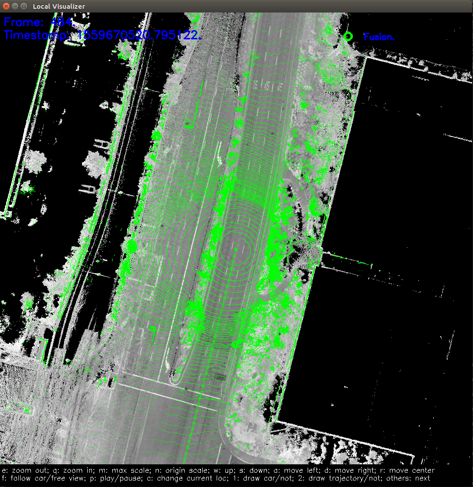

如何在本地运行RTK定位模块¶
本文档提供了如何在本地运行RTK定位模块的方法。
1. 事先准备¶
从GitHub网站下载Apollo源代码
按照教程设置Docker环境
从Apollo数据平台下载多传感器融合定位demo数据包（仅限美国地区），使用其中apollo3.5文件夹下的数据。
2. 编译apollo工程¶
2.1 启动并进入Apollo开发版Docker容器¶
bash docker/scripts/dev_start.sh
bash docker/scripts/dev_into.sh
2.2 编译工程¶
# (Optional) To make sure you start clean
bash apollo.sh clean -a
bash apollo.sh build_opt
3. 运行RTK模式定位¶
cyber_launch start /apollo/modules/localization/launch/rtk_localization.launch
在/apollo/data/log目录下，可以看到定位模块输出的相关log文件。
localization.INFO : INFO级别的log信息
localization.WARNING : WARNING级别的log信息
localization.ERROR : ERROR级别的log信息
localization.out : 标准输出重定向文件
localizaiton.flags : 启动localization模块使用的配置
4. 播放record文件¶
在下载好的定位demo数据中，找到一个名为”apollo3.5”的文件夹，假设该文件夹所在路径为DATA_PATH。
cd DATA_PATH/records
cyber_recorder play -f record.*
6. 可视化定位结果（可选）¶
可视化定位结果¶
运行可视化工具
cyber_launch start /apollo/modules/localization/launch/msf_visualizer.launch
该可视化工具首先根据定位地图生成用于可视化的缓存文件，存放在/apollo/cyber/data/map_visual目录下。
然后接收以下topic并进行可视化绘制。
/apollo/sensor/lidar128/compensator/PointCloud2
/apollo/localization/pose
可视化效果如下 